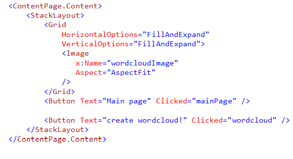
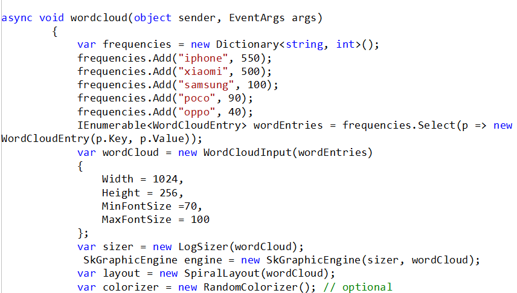
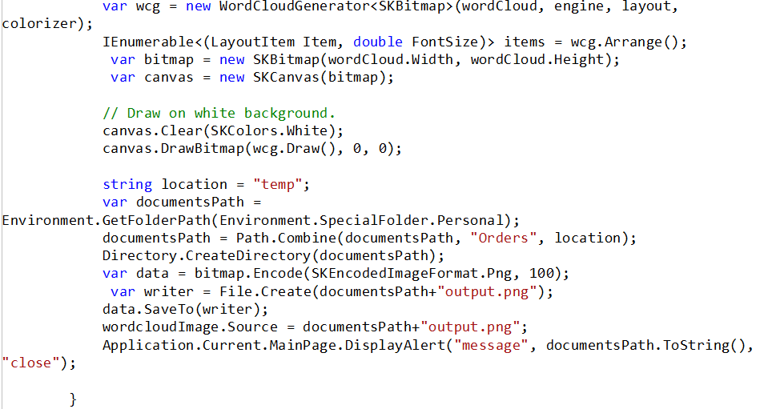
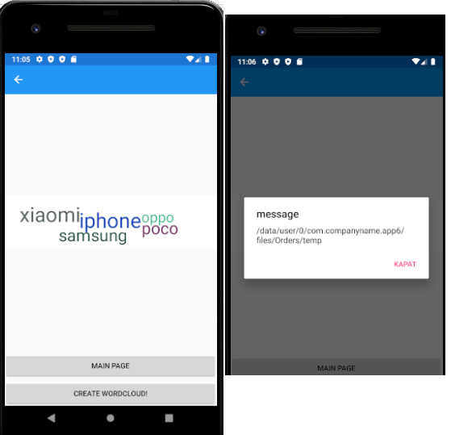

In this article, we see what steps do we need to create a wordcloud in Android application. To this end, a Xamarin Form design is utilized in Visual Studio 2019. 1. First, and foremost, we should be aware of using Android SDK. 2. In Visual Studio, create a blank Xamarin Form application, 3. From Tools->Nuget Package Manager->Manage Nuget Packages for Solution, install KnowledgePicker.WordCloud that provides us to create wordcloud image. In .xaml page should include two items including an image and a button as below.
Note that the image is in the Grid that enables us to fit the image in phone view. In the top of the xaml.cs page, Add the definitions of libraries given below are required to execute the codes.
using System; using System.Collections.Generic; using System.Linq; using Xamarin.Forms; using Xamarin.Forms.Xaml; using KnowledgePicker.WordCloud; using KnowledgePicker.WordCloud.Coloring; using KnowledgePicker.WordCloud.Drawing; using KnowledgePicker.WordCloud.Layouts; using KnowledgePicker.WordCloud.Primitives; using KnowledgePicker.WordCloud.Sizers; using SkiaSharp; using System.IO;
Following rows create a set of words along with frequencies.
var frequencies = new Dictionary
To set the font properties, use following lines: var wordCloud = new WordCloudInput(wordEntries) { Width = 1024, Height = 256, MinFontSize =70, MaxFontSize = 100 };
To create the bitmap of wordcloud, add the following lines:
//////////////////
var sizer = new LogSizer(wordCloud);
SkGraphicEngine engine = new SkGraphicEngine(sizer, wordCloud);
var layout = new SpiralLayout(wordCloud);
var colorizer = new RandomColorizer(); // optional
var wcg = new WordCloudGenerator
To save the image, perform the following rows: string location = "temp"; var documentsPath = Environment.GetFolderPath(Environment.SpecialFolder.Personal); documentsPath = Path.Combine(documentsPath, "Orders", location); Directory.CreateDirectory(documentsPath); var data = bitmap.Encode(SKEncodedImageFormat.Png, 100); var writer = File.Create(documentsPath+"output.png"); data.SaveTo(writer); To show the image use following line to set the path of the image: resim.Source = documentsPath+"output.png"; To see the exact path of the image, use the following line: Application.Current.MainPage.DisplayAlert("message", documentsPath.ToString(), "close"); ####################################### The full version of the wordcloud function. ##############################################   